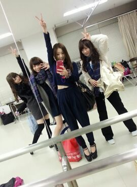
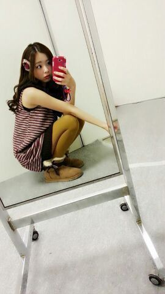

皆さん こんにちわ！！！
ろってぃ-です＼(^^)／
昨日は「うたうで!おどるで!THEカヴァ★コラTV」
見たかな？
皆 おつかれちゃ-ん //
終わってから パシャリ☆
まいやん、ななせ、まひろ、かずみ

リハーサルroom 鏡を利用した.♪あはん
ろってぃ-です(`・ω・)
昨日は 朝からリハーサルなど色々してましたω
大好きなアーティストさんの歌を
目の前で聴けて、本当に昨日は
興奮しっぱなしでした(#^.^#)
そして、私たちも 素晴らしい方々と
コラボさせて頂けることができて、
ほんっっとうに 嬉しかったです！
いやっ、ろってぃ-は
ほんっっとに 心の底から幸せでした！！！
LiLiCoさんも リハの時からずっと
話しかけてくれて 緊張感をほぐしてくれました.♪
現場にいた スタッフさん達も
歌にのって、ぴょんぴょんしたり
声だしていて、現場を盛りあげてくれました＼(^o^)／
本当に本当に
ありがとうございました＼(^o^)／☆
何か 書きたいことがありすぎて止まらなそうなので
心の中にしまっておきます(о´∀`о)あは
ではでは、今日も皆 頑張ろってぃ-やな♪いひひ
あっ、それと
個別握手会 第10〜12次受付中です.
是非 ろってぃ-に会いに来てね(*〃ω〃)/
おしゃべりしましょう.♪

http://fortunemusic.jp/
↑ここから応募できるよ♪
よろしくね(*´з`)-♪ 大好きだよ.
Rotty/ のし